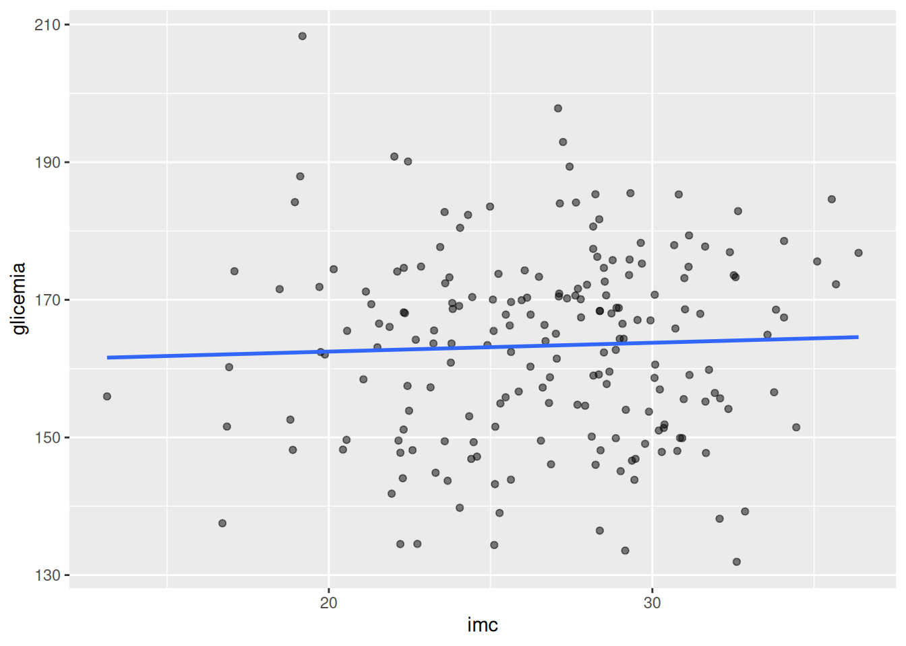
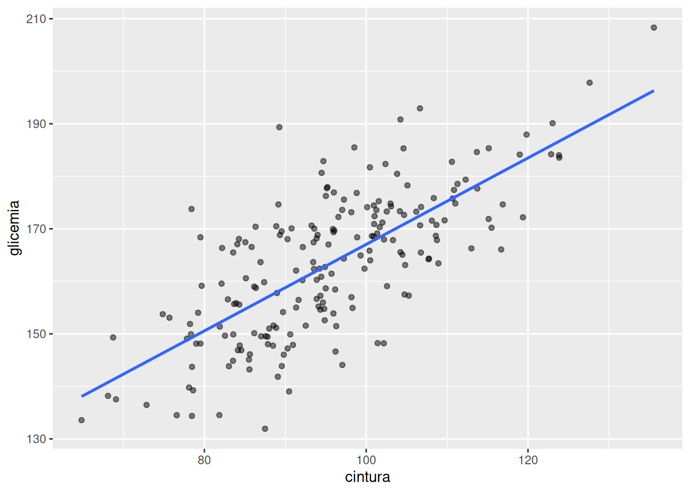
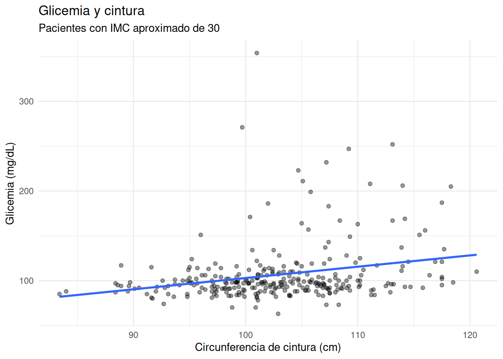
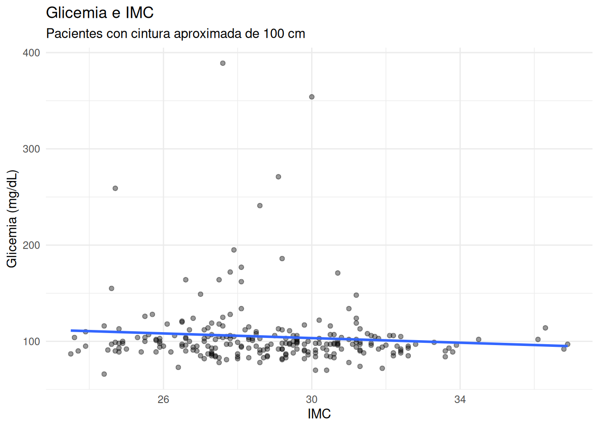
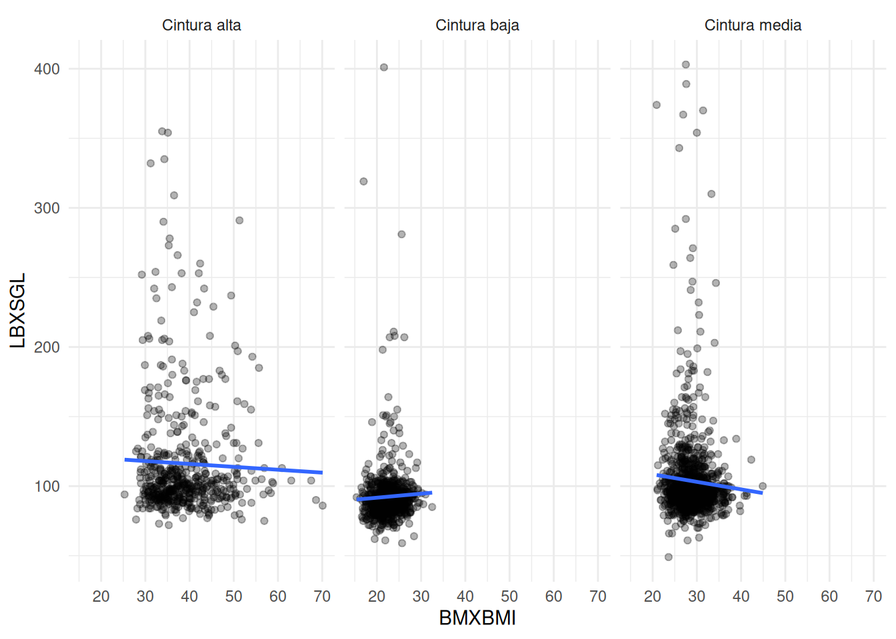
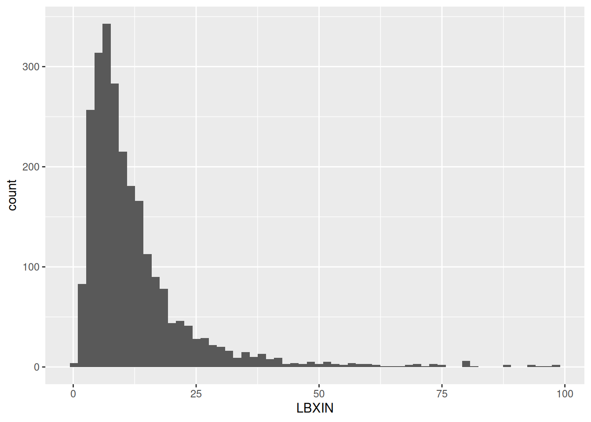
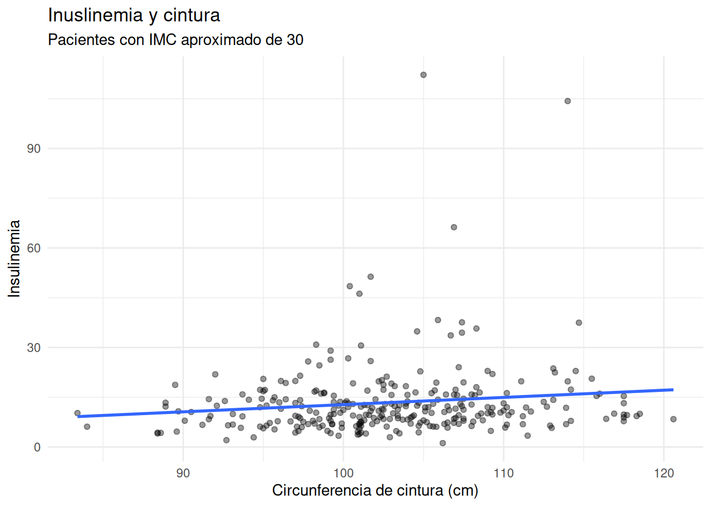
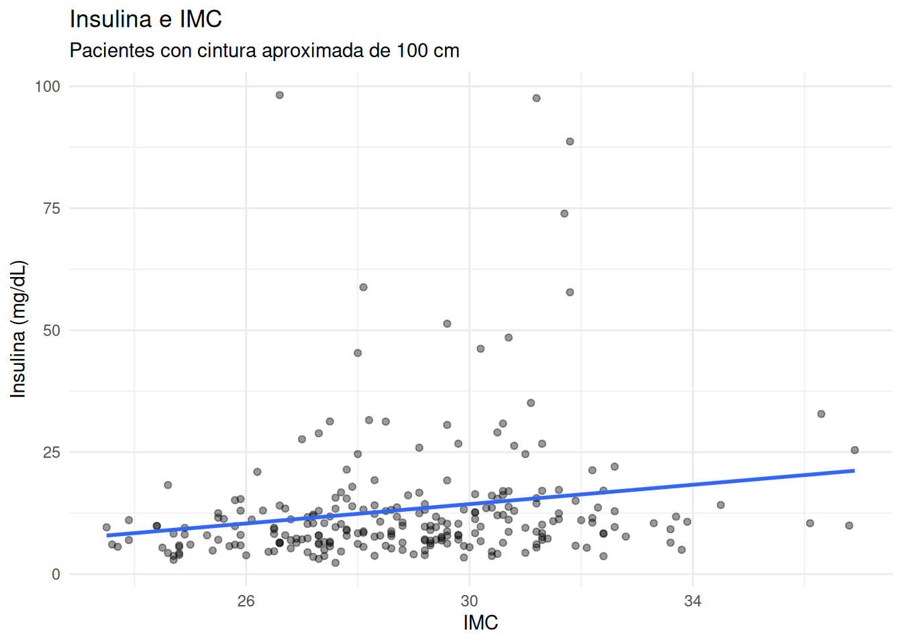

# Crear 200 pacientes
n <- 200
# Simular glicemmia a partir de valores simulados de imc y cintura
datos_sim <- tibble(
imc = rnorm(n, 27, 4),
cintura = rnorm(n, 95, 12)
) %>%
mutate(
glicemia = 70 +
0.6 * imc + # efecto moderado
0.8 * cintura + # efecto más fuerte
rnorm(n, 0, 10)
)15.- Resistencia a la insulina
1. Intuición (SIN código)
En la práctica clínica hay algo frustrante pero fascinante:
👉 La resistencia a la insulina no se mide directamente.
No hay un examen rutinario simple que diga: “este paciente tiene X nivel de resistencia”.
En cambio, la inferimos.
¿Cómo?
A través de señales indirectas:
- glicemia elevada
- aumento de adiposidad
- acumulación de grasa visceral
Un ejemplo clínico
Imagina dos pacientes:
- Paciente A
- IMC: 30
- Cintura: moderada
- Paciente B
- IMC: 30
- Cintura: muy elevada
Ambos tienen el mismo IMC. Pero no son metabólicamente iguales.
👉 El paciente B probablemente tiene más grasa visceral
👉 y mayor resistencia a la insulina
Esto es clave:
No toda obesidad es metabólicamente igual
¿Qué estamos intentando modelar?
Queremos usar datos para responder:
👉 ¿Cómo se relaciona la glicemia con:
- el IMC (adiposidad general)
- la cintura (grasa visceral)?
Y más importante:
👉 ¿Cuál de estas dos variables parece tener mayor impacto?
Idea central del modelo
Vamos a construir un modelo que diga:
“Dado el IMC y la cintura de un paciente, ¿qué valores de glicemia son plausibles?”
No buscamos una respuesta exacta. Buscamos un rango plausible.
Interpretación fisiopatológica
Este modelo no es solo estadística.
Es una forma de representar:
- hiperinsulinemia compensatoria
- resistencia periférica
- inflamación metabólica
- rol de la grasa visceral
👉 El modelo es una herramienta para entender fisiopatología.
2. Ejemplo simple (simulación en R)
Antes de usar datos reales, construyamos intuición.
Imaginemos que:
- la glicemia aumenta con el IMC
- pero aumenta aún más con la cintura
Visualización
# Visualizar la relación entre imc y glicemia
ggplot(datos_sim, aes(x = imc, y = glicemia)) +
geom_point(alpha = 0.5) +
geom_smooth(method = "lm", se = FALSE)
Ahora con cintura:
# Visualizar la relación entre cintura y glicemia
ggplot(datos_sim, aes(x = cintura, y = glicemia)) +
geom_point(alpha = 0.5) +
geom_smooth(method = "lm", se = FALSE)
Intuición clave
Vas a notar algo:
👉 Ambas variables se relacionan con glicemia
👉 Pero la cintura suele mostrar una pendiente más pronunciada
Esto anticipa lo que veremos en datos reales.
3. Ejemplo aplicado con NHANES
Hasta ahora hemos hablado de resistencia a la insulina de forma conceptual. Ahora vamos a intentar observar parte de esa fisiopatología directamente en datos reales.
Trabajaremos con tres variables de NHANES:
- LBXSGL → glicemia
- BMXBMI → IMC
- BMXWAIST → circunferencia de cintura
La idea clínica es simple:
👉 la glicemia podría aumentar tanto con la adiposidad total (IMC) como con la adiposidad visceral (cintura).
Pero queremos responder una pregunta más profunda:
¿Importa más el peso total o la distribución de grasa?
Preparación de datos
# Preparar los datos
datos <- df_obesidad %>%
select(LBXSGL, LBXIN, BMXBMI, BMXWAIST) %>%
drop_na()
# Filtrar los datos por glicemia e índice de masa corporal
datos <- datos %>%
filter(
LBXSGL <= 1000,
BMXBMI <= 100,
)Paso 1 — Modelo simple: IMC y glicemia
Comencemos con un modelo sencillo.
glicemia∼IMC
En R:
# Crear un modelo simple
modelo_imc <- stan_glm(
LBXSGL ~ BMXBMI,
data = datos,
chains = 2,
iter = 1000,
refresh = 0
)Resultados
print(modelo_imc)stan_glm
family: gaussian [identity]
formula: LBXSGL ~ BMXBMI
observations: 2517
predictors: 2
------
Median MAD_SD
(Intercept) 77.2 2.6
BMXBMI 0.9 0.1
Auxiliary parameter(s):
Median MAD_SD
sigma 32.4 0.5
------
* For help interpreting the printed output see ?print.stanreg
* For info on the priors used see ?prior_summary.stanregposterior_interval(modelo_imc) 5% 95%
(Intercept) 72.5754740 82.017584
BMXBMI 0.7169779 1.036827
sigma 31.6953123 33.144193Resultados principales:
| Parámetro | Mediana | Intervalo posterior 90% |
|---|---|---|
| IMC | 1.0 | 0.89 a 1.15 |
Interpretación clínica
El modelo sugiere que:
👉 por cada aumento de 1 unidad de IMC, la glicemia aumenta aproximadamente 1 mg/dL.
Y el rango plausible del efecto está aproximadamente entre:
- +0.9 mg/dL
- +1.15 mg/dL
Hasta aquí, el resultado parece bastante intuitivo:
👉 mayor adiposidad → mayor alteración metabólica.
Paso 2 — Añadiendo distribución de grasa
El IMC tiene una limitación importante:
👉 no distingue músculo de grasa
👉 no distingue grasa subcutánea de grasa visceral
Dos personas con el mismo IMC pueden tener perfiles metabólicos completamente distintos.
Por eso añadiremos:
circunferencia de cintura (BMXWAIST)
Modelo ajustado
Ahora construiremos:
glicemia∼IMC+cintura
En R:
# Crear modelo de relación de glicemia con imc + citura
modelo_completo <- stan_glm(
LBXSGL ~ BMXBMI + BMXWAIST,
data = datos,
chains = 2,
iter = 1000,
refresh = 0
)Resultados
print(modelo_completo) # produce:stan_glm
family: gaussian [identity]
formula: LBXSGL ~ BMXBMI + BMXWAIST
observations: 2517
predictors: 3
------
Median MAD_SD
(Intercept) 35.7 4.4
BMXBMI -1.6 0.2
BMXWAIST 1.1 0.1
Auxiliary parameter(s):
Median MAD_SD
sigma 31.4 0.4
------
* For help interpreting the printed output see ?print.stanreg
* For info on the priors used see ?prior_summary.stanregposterior_interval(modelo_completo) # produce: 5% 95%
(Intercept) 28.5494731 42.820919
BMXBMI -1.9326633 -1.215774
BMXWAIST 0.9800191 1.292680
sigma 30.7451161 32.188336Resultados principales:
| Parámetro | Mediana | Intervalo posterior 90% |
|---|---|---|
| IMC | -1.6 | -1.90 a -1.29 |
| Cintura | 1.2 | 1.07 a 1.32 |
Un resultado sorprendente
Aquí ocurrió algo muy interesante.
Cuando ajustamos por cintura:
- la cintura mostró una asociación positiva fuerte con glicemia
- el IMC cambió de positivo a negativo
Esto NO significa:
❌ “el IMC protege”
La interpretación correcta es más sutil.
Interpretando la cintura
El coeficiente de cintura significa:
Manteniendo constante el IMC, cada centímetro adicional de cintura se asocia aproximadamente con un aumento de 1 mg/dL de glicemia.
Y el intervalo posterior:
1.07 a 1.32
permanece completamente por encima de 0.
Esto sugiere una asociación metabólica consistente.
Interpretando el IMC negativo
Ahora pensemos cuidadosamente en el IMC.
El coeficiente negativo significa:
Entre personas con la misma cintura, aquellas con mayor IMC tienden a tener glicemias menores.
A primera vista esto parece extraño.
Pero fisiopatológicamente tiene sentido.
Posible interpretación fisiopatológica
Si dos personas tienen:
- la misma cintura
- pero una tiene mayor IMC
entonces parte de esa masa corporal adicional podría corresponder a:
- masa muscular
- masa no visceral
- grasa menos metabólicamente activa
El músculo:
- capta glucosa
- almacena glucógeno
- mejora sensibilidad a insulina
Entonces el modelo podría estar capturando indirectamente diferencias en composición corporal.
Un insight importante
El modelo parece sugerir:
La distribución de grasa importa más que el peso total.
Y esto coincide con conceptos modernos de medicina metabólica:
- adiposidad visceral
- obesidad metabólicamente sana
- limitaciones del IMC
Colinealidad clínica
IMC y cintura están fuertemente relacionados.
Las personas con mayor IMC suelen tener:
- más grasa total
- y también mayor cintura
Esto genera un fenómeno llamado:
Colinealidad
El modelo intenta separar:
- cuánto del efecto corresponde al IMC
- cuánto corresponde a la cintura
Y cuando logra separar parcialmente ambos componentes, emerge una interpretación fisiopatológica mucho más interesante.
4. Visualizando el fenómeno en datos reales
Hasta ahora hemos visto coeficientes.
Ahora veremos directamente los datos.
Gráfico 1 — Misma IMC, distinta cintura
Seleccionemos pacientes con IMC cercano a 30.
# Filtrar por pacientes cercanos a un imc de 30
datos_imc30 <- datos %>%
filter(BMXBMI >= 29,
BMXBMI <= 31)
# Diagrama de dispersión de cintura en relación con la glicemia cuando
# los pacientes tienen más o menos 30 de imc
ggplot(datos_imc30,
aes(x = BMXWAIST,
y = LBXSGL)) +
geom_point(alpha = 0.4) +
geom_smooth(method = "lm",
se = FALSE) +
labs(
title = "Glicemia y cintura",
subtitle = "Pacientes con IMC aproximado de 30",
x = "Circunferencia de cintura (cm)",
y = "Glicemia (mg/dL)"
) +
theme_minimal()
Interpretación
Aquí observamos algo importante:
👉 pacientes con el mismo IMC pueden tener glicemias muy distintas dependiendo de la cintura.
Esto sugiere que:
- la adiposidad visceral
- y no solamente el peso total
podría estar desempeñando un rol central en la resistencia a la insulina.
Gráfico 2 — Misma cintura, distinto IMC
Ahora hagamos lo contrario.
Seleccionemos pacientes con cintura cercana a 100 cm.
# filtrar por observaciones con cintura similar a 100cm o casi 100 cm
datos_cintura <- datos %>%
filter(BMXWAIST >= 98,
BMXWAIST <= 102)
# Diagrama de dispersión que relaciona el imc con la glicemia en las
# observaciones cercanas a 100cm de cintura
ggplot(datos_cintura,
aes(x = BMXBMI,
y = LBXSGL)) +
geom_point(alpha = 0.4) +
geom_smooth(method = "lm",
se = FALSE) +
labs(
title = "Glicemia e IMC",
subtitle = "Pacientes con cintura aproximada de 100 cm",
x = "IMC",
y = "Glicemia (mg/dL)"
) +
theme_minimal()
Interpretación
Aquí aparece uno de los hallazgos más interesantes del capítulo.
👉 Manteniendo una cintura similar, el IMC ya no muestra la relación positiva esperada.
La pendiente incluso puede volverse negativa.
Esto es compatible con la idea de que:
- parte del IMC podría reflejar masa muscular
- o adiposidad menos peligrosa metabólicamente
una vez que controlamos la grasa visceral.
Gráfico 3 — Relación IMC–glicemia según cintura
Ahora observemos cómo cambia la relación entre IMC y glicemia dependiendo de la cintura.
# Diagrama de dispersión que relaciona el imc con la glicemia
# facetado por nivel de cintura.
datos %>%
mutate(
cintura_cat = case_when(
BMXWAIST < 90 ~ "Cintura baja",
BMXWAIST < 110 ~ "Cintura media",
TRUE ~ "Cintura alta"
)
) %>%
ggplot(aes(x = BMXBMI,
y = LBXSGL)) +
geom_point(alpha = 0.3) +
geom_smooth(method = "lm",
se = FALSE) +
facet_wrap(~ cintura_cat) +
theme_minimal()
Interpretación fisiopatológica
Este gráfico muestra algo muy importante:
- en cintura baja, la relación IMC–glicemia es relativamente plana
- en cintura media y alta, la relación puede volverse negativa
Esto sugiere que el significado metabólico del IMC depende del contexto corporal.
👉 El IMC no representa la misma biología en todos los pacientes.
Sigma y la complejidad biológica
En ambos modelos observamos:
| Modelo | Sigma |
|---|---|
| Modelo simple | ~39.8 |
| Modelo ajustado | ~39.0 |
Sigma representa la variabilidad de glicemia que el modelo todavía no logra explicar.
Esto es importante porque:
- IMC y cintura NO determinan completamente la glicemia
- todavía existen muchos otros factores:
- dieta
- genética
- actividad física
- inflamación
- insulina
- sueño
- medicación
- diabetes previa
El modelo reconoce explícitamente esa incertidumbre.
Y eso es profundamente bayesiano.
Interpretación clínica final
Este capítulo nos deja una idea central:
No toda obesidad es metabólicamente igual.
El modelo sugiere que:
- la distribución de grasa
- especialmente la grasa abdominal
podría ser más importante que el peso total para entender resistencia a la insulina y alteraciones de glicemia.
Insight central del capítulo
👉 La distribución de grasa importa más que el peso total.
Ejercicios
Ejercicio 1 — Interpretación clínica básica
Tu modelo ajustado mostró:
| Variable | Mediana |
|---|---|
| IMC | -1.6 |
| cintura | 1.2 |
Explica con tus propias palabras:
- ¿Qué significa el coeficiente positivo de cintura?
- ¿Por qué el coeficiente negativo del IMC NO significa necesariamente que el IMC “proteja”?
- ¿Qué posible interpretación fisiopatológica podría tener ese coeficiente negativo?
Ejercicio 2 — Pensamiento clínico
Imagina dos pacientes:
| Paciente | IMC | Cintura |
|---|---|---|
| A | 30 | 90 |
| B | 30 | 110 |
Usando los resultados del modelo:
- ¿Cuál paciente esperarías que tenga mayor glicemia?
- ¿Qué concepto fisiopatológico está representando la cintura?
- ¿Por qué el IMC por sí solo podría ser insuficiente?
Ejercicio 3 — Interpretando incertidumbre
El intervalo posterior para cintura fue aproximadamente:
1.07 a 1.32
Responde:
- ¿Qué significa este intervalo en lenguaje clínico?
- ¿Por qué este intervalo da más información que un único coeficiente?
- ¿Qué implicaría si el intervalo incluyera valores cercanos a 0?
Ejercicio 4 — Pensamiento bayesiano
Completa la idea:
“El modelo no produce un único efecto verdadero del IMC. Produce _____________________.”
Ejercicio 5 — Sigma y biología
Tu sigma fue aproximadamente:
σ≈39
Explica:
- ¿Qué representa sigma intuitivamente?
- ¿Por qué sigma sigue siendo relativamente grande incluso después de ajustar por cintura?
- Menciona al menos 4 factores biológicos que podrían explicar parte de esa variabilidad residual.
Ejercicio 6 — Limitaciones del IMC
Menciona al menos 3 limitaciones del IMC como marcador metabólico.
Luego responde:
👉 ¿Por qué dos personas con el mismo IMC pueden tener perfiles metabólicos distintos?
Ejercicio 7 — Interpretación visual
Observaste:
- pendiente positiva entre cintura y glicemia
- pendiente negativa entre IMC y glicemia (a cintura constante)
Explica fisiopatológicamente:
- ¿Por qué la grasa visceral podría elevar glicemia?
- ¿Cómo podría la masa muscular influir sobre glicemia?
- ¿Qué está intentando separar el modelo ajustado?
Ejercicio 8 — Colinealidad clínica
Explica con tus palabras:
- ¿Por qué IMC y cintura están correlacionados?
- ¿Por qué esto dificulta separar efectos?
- ¿Por qué en este capítulo la colinealidad tiene significado fisiopatológico y no solo matemático?
Ejercicio 9 — Exploración adicional con NHANES
Crea un nuevo gráfico usando:
- HbA1c (LBXGH) o
- insulina (LBXIN)
como resultado.
Puedes usar:
- LBXGH ~ BMXBMI + BMXWAIST
o:
- LBXIN ~ BMXBMI + BMXWAIST
Luego responde:
- ¿La cintura sigue mostrando una asociación fuerte?
- ¿El IMC vuelve a cambiar de signo?
- ¿Los resultados son fisiopatológicamente plausibles?
# Preparar los datos
datos <- df_obesidad %>%
select(LBXIN, BMXBMI, BMXWAIST) %>%
drop_na()
# Filtrar los datos por glicemia e índice de masa corporal
datos <- datos %>%
filter(
LBXIN <= 100,
BMXBMI <= 100,
)# Histograma de la insulina
ggplot(datos, aes(x = LBXIN)) +
geom_histogram(bins = 60)
# Crear un modelo simple
modelo_imc <- stan_glm(
LBXIN ~ BMXBMI,
data = datos,
chains = 2,
iter = 1000,
refresh = 0
)# Imprimir resultados del modelo
print(modelo_imc) # produce:stan_glm
family: gaussian [identity]
formula: LBXIN ~ BMXBMI
observations: 2506
predictors: 2
------
Median MAD_SD
(Intercept) -9.6 0.9
BMXBMI 0.8 0.0
Auxiliary parameter(s):
Median MAD_SD
sigma 10.3 0.1
------
* For help interpreting the printed output see ?print.stanreg
* For info on the priors used see ?prior_summary.stanreg# Imprimir el intervalo posterior del modelo
posterior_interval(modelo_imc) # produce: 5% 95%
(Intercept) -11.0901968 -8.2242248
BMXBMI 0.7220872 0.8178903
sigma 10.1179709 10.5788942# Crear modelo de relación de insulina con imc + citura
modelo_completo <- stan_glm(
LBXIN ~ BMXBMI + BMXWAIST,
data = datos,
chains = 2,
iter = 1000,
refresh = 0
)# Imprimir el resultado del modelo
print(modelo_completo)stan_glm
family: gaussian [identity]
formula: LBXIN ~ BMXBMI + BMXWAIST
observations: 2506
predictors: 3
------
Median MAD_SD
(Intercept) -17.9 1.4
BMXBMI 0.3 0.1
BMXWAIST 0.2 0.0
Auxiliary parameter(s):
Median MAD_SD
sigma 10.2 0.1
------
* For help interpreting the printed output see ?print.stanreg
* For info on the priors used see ?prior_summary.stanreg# imprimir el intervalo posterior
posterior_interval(modelo_completo) # produce: 5% 95%
(Intercept) -20.0258355 -15.7615491
BMXBMI 0.1788419 0.4053413
BMXWAIST 0.1756808 0.2704572
sigma 9.9971049 10.4784430# Diagrama de dispersión de cintura en relación con la insulina cuando
# los pacientes tienen más o menos 30 de imc
ggplot(datos_imc30,
aes(x = BMXWAIST,
y = LBXIN)) +
geom_point(alpha = 0.4) +
geom_smooth(method = "lm",
se = FALSE) +
labs(
title = "Inuslinemia y cintura",
subtitle = "Pacientes con IMC aproximado de 30",
x = "Circunferencia de cintura (cm)",
y = "Insulinemia"
) +
theme_minimal()
# Diagrama de dispersión que relaciona el imc con la insulina en las
# observaciones cercanas a 100cm de cintura
ggplot(datos_cintura,
aes(x = BMXBMI,
y = LBXIN)) +
geom_point(alpha = 0.4) +
geom_smooth(method = "lm",
se = FALSE) +
labs(
title = "Insulina e IMC",
subtitle = "Pacientes con cintura aproximada de 100 cm",
x = "IMC",
y = "Insulina (mg/dL)"
) +
theme_minimal()
Ejercicio 10 — Reflexión final (el más importante)
Antes de este capítulo, muchas personas pensarían:
“La obesidad depende principalmente del peso.”
Después de trabajar con estos modelos:
👉 ¿Cómo cambiarías esa afirmación?
Intenta responder en:
- lenguaje clínico
- no estadístico
- como si se lo explicaras a un paciente o a otro médico.